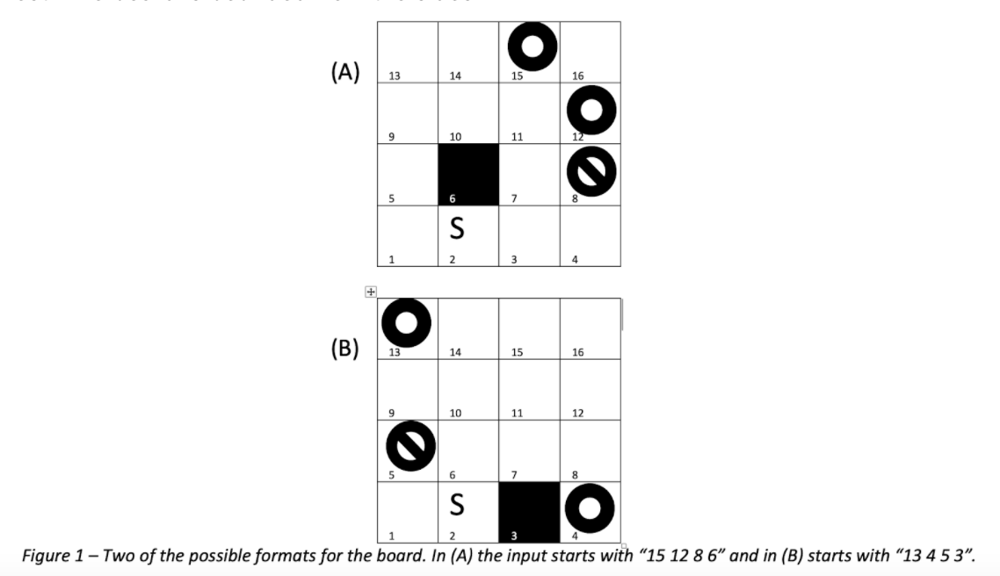

Projects
Perception/Logistic Regression
Trained a supervised machine learning algorithm to binary classify feature data using a perceptron
(with gradient descent) and logistic regression (sigmoid activation).
Agent Reinforcement Learning

Used a Q-learning algorithm to train an agent using rewards and punishments to traverse through a maze from
start to goal state. Agent randomly explores/exploits using an e - greedy method. Uses the Bellman Equation
to update the Q-values for each action at all possible states.
Adversarial Search - AI

Implemented an alpha-beta pruning algorithm to traverse through a tree and choose states intelligently to relax.
Pancake Flipping

Built a robust Breadth-First and A* Search algorithm to solve the pancake flipping problem. Imple- mented a graph
in Python and used a heuristic function based on out-of-place pancakes.
Hip Exoskeleton Suit
Built a 3D CAD model and a MATLAB GUI program to interact with the CAD model. Fed GUI in- formation to SolidWorks
to resize suit proportionally to a person. Used Simulink to analyze model behaviour to different hip kinematics and
dynamics and make it fail-safe.